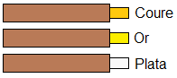
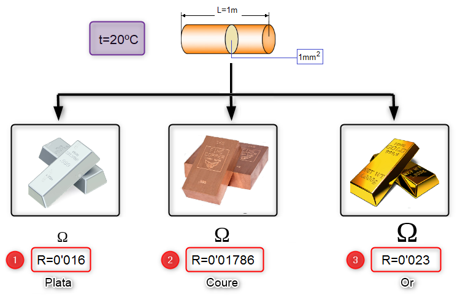
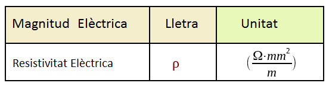
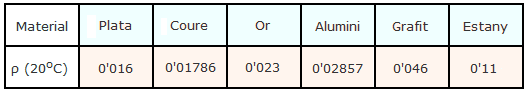

La Resistivitat
La resistivitat (ρ) és una propietat física dels materials, que quantifica la resistència que té aquest material a la circulació de les càrregues elèctriques.
Suposem que tenim tres conductors elèctric fabricats amb diferents materials:

I ens pregunten, quin dels tres materials és el millor conductor? Per respondre a aquesta pregunta el que farem serà mesurar la resistència elèctrica dels tres conductors elèctrics i per tant, el conductor que tingue el valor de resistència més baix serà el millor conductor. Ara bé, si volem que els resultats siguen homogenis, aquestes tres mesures s'han de fer a la mateixa temperatura (20ºC) i amb conductors que tinguen les mateixes dimensions (Longitud=1m i Gruix=1mm2).

Per tant, podem definir la resistivitat de la següent manera:
La resistivitat (ρ) és el valor en Ohms que s'obté quan és mesura a una temperatura de 20ºC la resistència elèctrica de un material conductor de longitud 1 metre i secció 1 mm2.
Unitats

En la següent taula podem veure la resistivitat d'alguns dels materials conductors més utilitzats:
